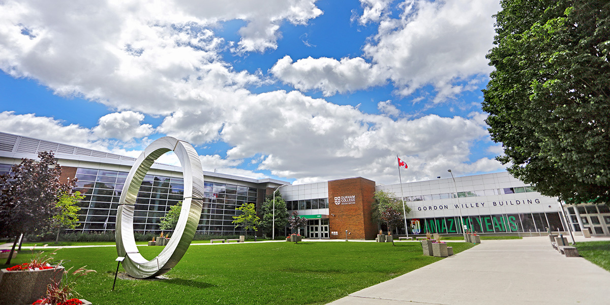

ABOUT OUR COLLEGE

STIET
our college will be a global leader in imparting futuristic technical education with human values. It fosters ethical, social and moral values through holistic learning to groom your minds into responsible and successful global citizens. At Sreyas student will transforms into an individual full of enthusiasm, confidence and knowledge to face global challenges, becoming both individually and professionally successful. To encompass universal standards and preeminence in teaching,research and consultancy by creating an intendance clime in the tract of technological studies with professionalism and global outlook ensuring incessant melioration. Sreyas campus is equipped with facilities for outdoor games like cricket, football, volley ball, tennis, basketball and a 400meter track for athletics. An indoor sports complex offers provision for indoor games like table tennis, caroms, badminton etc. Sreyas has Digital library which stores many e-learning materials for the students and faculty. All laboratories are well -equipped and Well maintained. Computer labs, science and humanities labs are used to conduct all curicculum -orientated experiments, as well as to carry out research -oriented projects. Finally I share few photos below that I have experienced.
I really liked my college atmosphere as it looks so green with all the trees,the infrastructure in the college is very good.staff members are nice.Faculty in our college interact with us and teach us more things which are very useful for us in future,placements are good.extra curricular activities are also conducted.like annual days, traditional days and I also participated in sports like badminton as it helps us to refresh our minds and there is special place for playing cricket,football and basketball.But in our college we don't have technical fests as they may help in sharing ideas and their knowledge with each other.